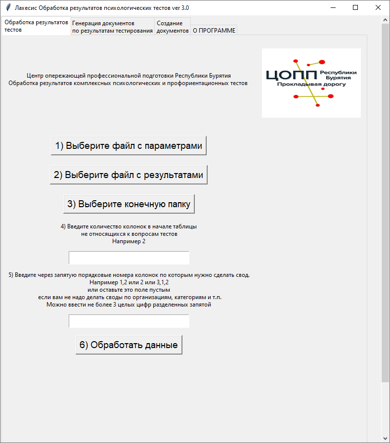

Назначение программы
Программа предназначена для автоматической обработки результатов психологических и профориентационных тестов, социометрических исследований полученных с помощью Яндекс-форм (можно использовать и другие сервисы опросов) в формате Excel (xlsx).
Программа внесена в реестр отечественного программного обеспечения
Ссылка на свидетельство РоспатентаСсылка на запись в реестре отечественного ПО
Для кого эта программа?
Эта программа может использоваться педагогами-психологами школ, СПО, ВУЗ, специалистами по профориентационной работе, психологами иных организаций.
Что может программа
Обрабатывать следующие психологические и профориентационные тесты:
Тесты на выявление структуры личности:
- Методика многофакторного исследования личности Кеттела (подростковый вариант) 14PF/HSPQ Адаптация А. А. Рукавишников, М. В. Соколова;
- Опросник копинг-установок подростков ACOPE Польская;
- Способы совладающего поведения, WCQ Адаптация НИПНИ Бехтерева;
- Шкала враждебности Кука-Медлей CMHS Адаптация: Ю. А. Менджерицкая;
- Экспресс-диагностика характерологических особенностей личности (ХОЛ) Т.В. Маталина;
- Опросник Тенденции в принятии решений DMTI Адаптация: А. Ю. Разваляева;
- Шкала Р. Шварцера Проактивные аттитюды Адаптация: А. А. Бехтер;
- Методика Семантический дифференциал жизненной ситуации О.В. Александрова, И.Б. Дерманова;
- Опросник перфекционизма Н.Г. Гаранян, А.Б. Холмогорова, Т.Ю. Юдеева;
- Опросник социальных аксиом (ОСА-31) А.Н. Татарко, Н.М. Лебедева.
Тесты на психологическое состояние (тревожность, депрессия, одиночество и т.п.):
- Индекс общего самочувствия ВОЗ 1999;
- Шкала тревожности Кондаша;
- Шкала депрессии Бека;
- Шкала безнадежности Бека;
- Шкала депрессии Цунга;
- Шкала депрессии, тревоги и стресса, DASS-21 Адаптация А. А. Золотарева;
- Шкала психологического стресса PSM-25 Адаптация Н. Е. Водопьянова;
- Симптоматический опросник SCL-K-9 Адаптация А. А. Золотарева;
- Опросник выраженности психопатологической симптоматики SCL-90-R Адаптация Н. В. Тарабрина;
- Школьная тревожность Филлипс;
- Шкала одиночества, UCLA 3 Рассел Адаптация И. Н. Ишмухаметов;
- Методика многомерной оценки детской тревожности (МОДТ) Е. Е. Ромицына, Л. И. Вассерман;
- Психологические проблемы подростков в реальной и виртуальной среде Л.А. Регуш и др. 2023г.;
- Сильные стороны и трудности SDQ Гудман Адаптация О.А. Ульянина и др.;
- Шкала явной тревожности для детей CMAS А.М. Прихожан;
- Шкала явной тревожности для подростков CMAS А.М. Прихожан;
- Шкала проявлений тревоги Тейлор, TMAS Адаптация В.Г. Норакидзе;
- Методика измерения подростковой тревожности А. А. Хван, Ю. А. Зайцев;
- Шкала реактивной и личностной тревожности STAI Спилбергер Адаптация Ю.Л. Ханин;
- Шкала душевной боли, PAS-13 Холден. Адаптация Колачев Н.И., К. А. Чистопольская и др.;
- Опросник суицидального риска А.Г. Шмелев Т.Н. Разуваева;
- Опросник хикикомори, HQ-25 Тео Адаптация Я. С. Лякина, А.А. Федоров;
- Дифференциальный опросник переживания одиночества (краткий вариант) ДОПО-3к Д.А. Леонтьев, Е.Н. Осин;
- Опросник «Индекс социокультурной безопасности школьника» Э.Н. Гилемханова.
Тесты на девиантное поведение:
- Склонность к девиантному поведению Э.В. Леус;
- Шкала нарушенных потребностей. Остракизм (подростки, молодежь), Е.Э. Бойкина;
- Шкала субъективного остракизма (подростки, молодежь), Е.Э. Бойкина;
- Выявление буллинг-структуры Е.Г. Норкина;
- Опросник враждебности Басса-Дарки, BDHI Адаптация А.А. Хван;
- Опросник диагностики агрессии Басса-Перри, BPAQ-24 Адаптация С. Н. Ениколопов;
- Опросник киберагрессии Альварез-Гарсия, CYBA Адаптация А.А. Шаров;
- Опросник Типология киберагрессии, CATQ Адаптация С.С. Антипина;
- Виды агрессивности Л.Г. Почебут;
- ДАП-П Диагностический опросник для выявления склонности к различным формам девиантного поведения Школьный вариант;
- ДАП -П Диагностический опросник для выявления склонности к различным формам девиантного поведения СПО вариант;
- Методика первичной диагностики и выявления детей «группы риска М.И. Рожков, М.А. Ковальчук;
- Опросник риска буллинга А.А. Бочавер и др.;
- Опросник Буллинг Олвеус;
- Опросник по выявлению рисков буллинга в образовательной среде для обучающихся 5-11 классов НИЦМП;
- Скрининговая методика оценки личностных ресурсов обучающихся Н.Н. Васягина, Е.Н. Григорян, Е.С. Баринова форма №1 для 5-8 классов;
- Скрининговая методика оценки личностных ресурсов обучающихся Н.Н. Васягина, Е.Н. Григорян, Е.С. Баринова форма №2 для 9-11 класса, студентов.
Тесты киберпсихология:
- Шкала интернет-зависимости Чена, CIAS Адаптация В.Л. Малыгин;
- Общая шкала проблемного использования интернета-3 (GPIUS3) Адаптация А.А. Герасимова, А.Б. Холмогорова;
- Опросник Родительское посредничество детской медиаактивности Лемиш Адаптация П.И. Тарунтаева;
- Тест для младших школьников на определение компьютерной зависимости О.Л. Кутуева;
- Тест для родителей младших школьников на определение компьютерной зависимости В.Г. Писарев;
- Способ скрининговой диагностики компьютерной зависимости Л.Н. Юрьева, Т.Ю. Больбот;
- Опросник поведения в интернете А.Е. Жичкина;
- Степень увлеченности младших подростков компьютерными играми А.В. Гришина;
- Шкала зависимости от смартфона SAS Квон Адаптация В.П. Шейнов;
- Виртуальная идентичность пользователей социальных сетей Д.Н. Погорелов;
- Тест на интернет-зависимость IAT Янг Адаптация В.А. Лоскутова;
- Методика диагностики гейм-аддикции Н.В. Кочетков;
- Шкала оценки зависимости от Интернет-игр краткая форма, IGDS9-SF Адаптация А.А. Петров, Н.Б. Черняк;
- Шкала игровой зависимости для подростков, GASA Адаптация С.Ю. Терещенко, Н.Н. Горбачева;
- Опросник проблемного использования социальных сетей Н.А. Сирота, Д.В. Московченко, В.М. Ялтонский, А.В. Ялтонская.
Тесты на профессиональное и эмоциональное выгорание:
- Профессиональное выгорание педагогов методика Н. Е. Водопьяновой на основе модели К. Маслач и С. Джексон;
- Диагностика уровня эмоционального выгорания В.В.Бойко (в модиф. Е.Ильина);
- Диагностика уровня эмоционального выгорания В.В.Бойко;
- Опросник психологического выгорания А.А. Рукавишников;
- Опросник профессионального выгорания Маслач, MBI;
- Оценка профессионального выгорания (BAT) краткая версия адаптация А.Д. Демкин;
- Экспресс-оценка выгорания (В. Каппони, Т. Новак);
- Шкала организационного цинизма, OCS Павлова, Дзюбенко, Нартова-Бочавер;
- Опросник благополучия PERMA-Profiler Исаева, Акимова, Волкова;
- Опросник Ситуации в школе Т.О. Гордеева, О.А. Сычев.
Тесты на адаптацию:
- Опросник Самочувствие, Активность, Настроение В.А. Доскин М.П. Мирошников;
- Методика диагностики самооценки психических состояний Г. Айзенка;
- Шкала социально-психологической адаптированности (К.Роджерс, Р.Даймонд). Адаптация Т. В. Снегиревой;
- Экспресс-диагностика уровня адаптации первокурсников О.А. Гончарова;
Тесты на выявление признаков ПТСР и нервно-психическую устойчивость:
- Методика оценки нервно-психической устойчивости «Прогноз-2» В.Ю. Рыбников;
- Миссисипская шкала посттравматического стрессового расстройства (Mississippi Scale for PTSD, CMS) военный вариант;
- Миссисипская шкала посттравматического стрессового расстройства (Mississippi Scale for PTSD, CMS) гражданский вариант;
- Опросник на скрининг ПТСР (Trauma Screening Questionnaire, Brewin C. et al., 2002);
- Шкала оценки влияния травматического события (ШОВТС) Адаптация Н. В. Тарабрина;
- Шкала оценки интенсивности боевого опыта Адаптация Н. В. Тарабрина;
Тесты на лидерство и эмоциональный интеллект:
- Эмоциональный интеллект Д.В. Люсин
- Уровень самооценки С.В. Ковалев
- Коммуникативные и организаторские склонности В.В. Синявский, В.А. Федорошин КОС-1
Тесты на мотивацию, риск:
- Опросник мотивации к достижению цели, к успеху (Т. Элерс) Адаптация М.А. Котик;
- Опросник мотивации к избеганию неудач (Т. Элерс) Адаптация М.А. Котик;
- Опросник оценки склонности к риску, RSK (Г. Шуберт) Адаптация М.А. Котик;
- Диагностика мотивации учения и эмоционального отношения к учению в средних и старших классах школы А.М. Прихожан;
- Опросник Контроль поведения Сергиенко, Виленская, Ветрова;
- Методика «Шкалы академической мотивации школьников» Т.О. Гордеева, О.А. Сычев, В.В. Гижицкий, Т.К. Гавриченкова;
- Опросник Субъектная позиция Ю.В. Зарецкий, В.К. Зарецкий, И.Ю. Кулагина.
Профориентационные тесты:
- Карта интересов Голомшток в редакции А.А. Азбель (144 вопроса,24 сферы).
- Профессиональная идентичность А.А. Азбель.
- Характер и профессия Г.В. Резапкина.
- Склонность к исполнительскому или творческому труду А.А. Азбель.
- Наемный труд, фриланс, предпринимательство А. Г. Грецов.
- Профессиональные установки подростков А.Д. Андреева.
- Направленность на вид инженерной деятельности О.Б. Годлиник.
- Якоря карьеры, методика диагностики ценностных ориентаций в карьере (Э.Шейн, перевод и адаптация В.А.Чикер, В.Э.Винокурова).
- Тест Дж.Голланда (Дж.Холланда) на определение профессионального типа личности (модификация Г.В.Резапкиной).
- Сфера профессиональных предпочтений учащихся (модификация Г. В. Резапкиной).
- Дифференциально-диагностический опросник (модификация А.А. Азбель).
- Иерархия жизненных ценностей Г.В. Резапкина
Тесты на климат в группе, сплоченность:
- Методика оценки уровня психологического климата коллектива;
- Социально-психологическая самоаттестация коллектива Р.С. Немов Школьный вариант;
- Опросник «Климат в классе» Н.Б. Шумакова, Е.И. Щебланова, М.Г. Сорокова;
- Определение привлекательности для школьника группы одноклассников В.С. Ивашкин.
Прочие тесты:
- Методика аккультурационных ожиданий Берри З.Х. Лепшокова, А.Н. Татарко;
- Шкала взаимной адаптации в браке Спаниер Полякова, Сорокова, Гаранян.
Автоматически создавать документы с результатами тестирования по количеству прошедших тестирование.
Преимущества
- Бесплатно. Все что вам нужно это аккаунт на Яндекс почте.
- Простота. Самое трудоемкое это сделать Яндекс Форму с выбранными тестами.
- Без проблем работает на мобильных телефонах. Не нужно думать, где взять компьютеры для тестирования.
- Массовость. Можно проводить одновременные тестирования для большого количества человек.
- Организовать, провести и обработать результаты теста может один человек. При этом от него не будет требоваться каких-то специальных знаний.
- Чтобы пройти тест, не нужно нигде регистрироваться. Человек получил ссылку на тест после чего прошел тест.
- Можно провести без передачи персональных данных.
- Автоматическое создание на бланках вашей организации документов с результатами тестирования.
- Ранжирование результатов, тестируемых по степени выраженности склонностей.
- Групповая статистика в разрезе выбранных категорий (до 3 категорий).
- Обработка социометрии из Яндекс форм и произвольных форм.
- Создание социоматриц.
- Создание социограмм.
- Программа работает в отечественных ОС.
- Программа внесена в реестр отечественного ПО.
Возможности (данные используемые для демонстрации, являются искусственно сгенерированными)
- Результаты каждого тестируемого с отображением численного показателя и уровня шкалы соответствующего теста.
- Создание списка с тестируемыми у которых было найдено хотя бы одно тяжелое состояние (при тестировании на тревожность и депрессию, адаптацию, психологическое состояние, остракизм).
- Создание списка с тестируемыми у которых было найдено минимум 2 предтяжелых состояния (при тестировании на тревожность и депрессию, адаптацию, психологическое состояние, остракизм).
- Подсчет количества прошедших тестирование по выбранным категориям (до 3).
- Подробные результаты каждого теста по отдельности с указанием результатов субшкал (при наличии).
- Создание списка с ответами тестируемых на каждый тест для проверки правильности подсчета программой результатов.
- Сводная таблица по состояниям.
- Сводная таблица по уровням склонности для профориентационных тестов.
- Листы со списками по уровню склонности.
- Сводная таблица по сферам деятельности к которым склонны тестируемые для профориентационных тестов.
- Листы со списками по склонности к той или иной сфере.
- Подсчет среднего значения показателя и уровня шкалы теста в разрезе выбранных категорий(до 3).
- Подсчет среднего значения показателя и уровня шкалы теста в разрезе выбранных категорий(до 3).
- Подсчет количества тестируемых по уровням шкалы теста в разрезе выбранных категорий(до 3).
- Подсчет количества тестируемых по уровням шкалы теста в разрезе выбранных категорий(до 3).
- Создание социоматриц.
- Создание социограмм.
- Базовый групповой и индивидуальный анализ социометрии.
Входные данные
Программа использует в своей работе файлы формата xlsx (Excel или его аналоги) в которых содержатся ответы тестируемых и файлы формата docx (Word и его аналоги) используемые в качестве шаблонов для создания справок, сертификатов и т.п.
Программа не использует в своей работе какие-либо базы данных
Выходные данные
В папке которую выбирает пользователь создаются файлы формата xlsx и docx
Алгоритм организации и проведения социометрии с помощью Лахесис
1) Педагог-психолог создает опросную форму используя свои вопросы социометрии (можно использовать любые сервисы, которые позволяют получать результаты опроса в формате xlsx и поддерживающие тип вопроса Несколько вариантов).
2) Педагог-психолог создает ссылку, QR-код на созданную форму социометрии конкретной группы, класса.
3) После проведения социометрии педагог-психолог скачивает результаты в виде таблицы Excel(xlsx) и с помощью Лахесис получает обработанные результаты социометрии (социограммы и социоматрицы).
Опросная форма должна соответствовать нескольким правилам.
Правила создания формы социометрии.
В форме обязательно должен быть вопрос с названием ФИО (именно ФИО, а не ФИО школьника или не введите свое ФИО и т.п.)
Каждый вопрос социометрии должен быть на новой странице
Для каждой новой социометрии рекомендуется создавать новую форму, без копирования старой во избежание путаницы с ФИО
Вопрос ФИО и прочие анкетные вопросы должны быть в начале формы
Правило 2.
Алгоритм организации и проведения психологического или профориентационного тестирования с помощью Лахесис
1) Педагог-психолог создает опросную форму комбинируя в нужном ему порядке и количестве тесты из списка имеющихся (можно использовать любые сервисы, которые позволяют получать результаты опроса в формате xlsx).
2) Педагог-психолог проводит рассылку ссылок, QR-кодов на созданные формы посредством сайта организации, мессенджеров и т.п.
3) После окончания тестирования педагог-психолог скачивает результаты в виде таблицы Excel(xlsx) и с помощью Лахесис получает обработанные результаты тестирования.
4) При необходимости регулярного тестирования производится копирование формы (при этом новая форма создается без старых ответов) и шаги 2,3 повторяются.
Опросная форма должна соответствовать нескольким правилам.
Правило 1.
Анкетная часть должна находится в начале формы.
Анкетная часть должны быть только одна.
Анкетная часть — это вопросы, определяющие принадлежность тестируемого той или иной категории вида Муниципалитет, Группа, Класс, Курс, Специальность, Отдел, Пол, ФИО и т.п.
Правило 2.
Вопросы, относящиеся к одному тесту, должны идти подряд. Если вы сделали комплексный тест, состоящий из нескольких тестов, то между вопросами тестов не должно быть других вопросов.
Количество, текст вопросов и ответов должно совпадать с указанными в папке Материалы для внедрения-Используемые тесты (эта папка находится в архиве вместе с программой. Также вы можете ее скачать с сайта itdarhan.ru) т.е. в тесте Шкала безнадежности Бека должно быть обязательно 20 вопросов и т.д.
Интерфейс пользователя
При работе с программой используется графический интерфейс

Совместимость
Операционная система: Windows 7, Windows 8 / 8.1, Windows 10 и выше, Linux (Импортозамещенные ОС: Red OS, Alt Linux, Astra Linux)
Безопасность
Программа работает локально, не использует локальную сеть или сеть Интернет.
Исходные файлы xlsx и docx пользователя не изменяются программой.
Удобство использования
В интерфейсе программы используются вкладки, на каждой из вкладок находится все что нужно для работы конкретной функции программы.
В программе не используются меню различной степени вложенности, все шаги которые нужно выполнить пользователю пронумерованы по порядку.
Интерфейс ориентирован на пользователей с невысоким уровнем компьютерной грамотности.
Поддержка
Предложения, замечания по работе программы отправлять на почту itdarhan@yandex.ru
Скачать
Чтобы начать работу, скачайте инструкцию
Скачать инструкцию по установке и началу работыВ руководстве пользователя вы найдете подробное пошаговое руководство по работе с каждой из функций программы.
Скачать руководство пользователяСкачайте и распакуйте архив с материалами для внедрения. Персональные данные используемые в примерах, являются искусственно сгенерированными.
Скачать материалы для внедренияОбучающие видео по работе с программой.
Обучающие видеоВыберите нужную версию Лахесис для скачивания.
Скачать версию Лахесис для Windows x64Скачать версию Лахесис для Windows x32
Скачать версию Лахесис для Linux x64